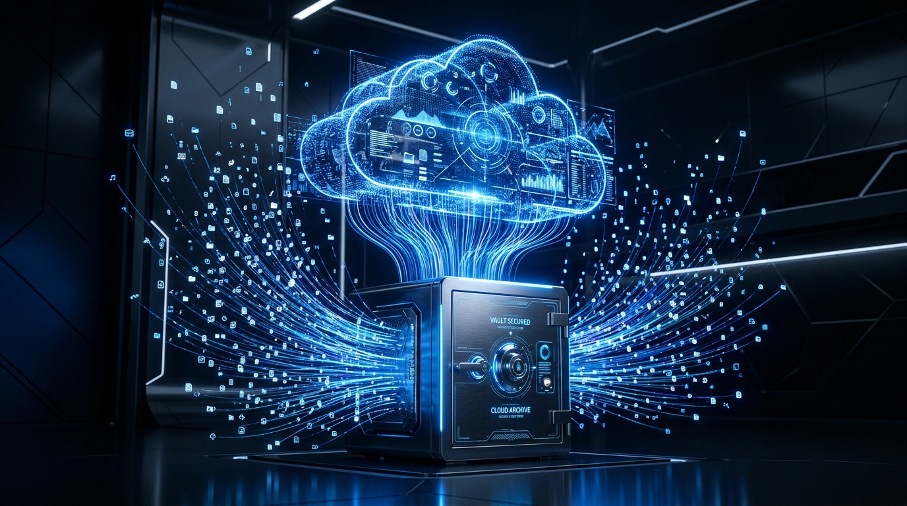

سحابتك الخاصة…
محميّة للأبد بدون فقدان أي ملف.
AuraSync هو الجيل المتقدم من برامج المزامنة السحابية للويندوز. يجمع بين تقنية Zero-Deletion لمنع الحذف العفوي، خزنة تشفير عسكرية AES-256، نظام الترحيل والاستعادة بنقرة واحدة عند الانتقال لجهاز جديد، ودعم متعدد السحابات (Google Drive, OneDrive, Dropbox, S3).

ميزات استثنائية لم تجتمع
في أي برنامج سحابي من قبل.
تمت هندسة التطبيق من الصفر بمعايير أمان موثوقة ليمنحك راحة بال مطلقة، وتحكماً كاملاً في كل بايت من بياناتك.
سياسة Zero-Deletion الحصرية
إذا حذفت ملفاً من جهازك عن طريق الخطأ أو أصيب بفيروس، نسختك السحابية تظل محفوظة 100% في سلة المحفوظات ويمكن استرجاعها بنقرة واحدة.
الاستعادة والترحيل (1-Click Recovery)
اشتريت لابتوب جديد؟ نقرة واحدة داخل البرنامج ستعيد كل مجلداتك (سطح المكتب، المستندات، ملفات العمل) إلى مساراتها الأصلية دون أي إعداد يدوي.
الخزنة المشفرة AES-256-GCM
قفل وإخفاء وتشفير ملفاتك الحساسة بمفتاح مشتق من كلمة سرك (100k PBKDF2 iterations) مع فتح مؤقت معزول تماماً عن التجسس.
تكامل Multi-Cloud (قاعدة 3-2-1)
اربط حسابك في Google Drive و OneDrive و Dropbox في برنامج واحد، وارفع نفس المجلد إلى سحابتين معاً لحماية مزدوجة ضد تعطل أي مزود.
محرك سرعة تيربو حتى 32 مسار
استفد من كامل سرعة خط الإنترنت لديك؛ يتم تجزئة ورفع آلاف الملفات الصغيرة والكبيرة بمسارات متوازية غير مقيدة وبدون أي تعطيل.
فلترة ذكية لملفات النظام المهملة
حظر تلقائي وتام لملفات الويندوز المخفية وكاش الصور مثل desktop.ini و Thumbs.db حتى لا تتسرب أبداً إلى سحابتك وتظل ملفاتك نقية.
انتقلت إلى كمبيوتر جديد؟
كل ملفاتك ترجع في ثوانٍ معدودة.
ميزة Disaster Recovery الحصرية تفحص السحابة بذكاء وتتعرف على مجلدات جهازك السابق. بضغطة زر واحدة، تستعيد سطح المكتب والمستندات في مساراتها الطبيعية، أو تدمجها في مجلد موحد.
- ✓ الوضع الذكي (Smart Native Path): يعيد كل مجلد إلى موقعه النظامي الصحيح (Desktop ➔ Desktop, Documents ➔ Documents).
- ✓ الوضع المجمع (Consolidated): يجمع كل محتويات جهازك القديم داخل مجلد واحد منظم مثل D:\OldPC_Backup.
- ✓ مسارات مخصصة مرنة: حرية كاملة في تحديد وجهة أي مجلد محدد على أقراص SSD أو الأقراص الخارجية.


تشفير AES-256-GCM محلي،
ولا وسيط ثالث يرى ملفاتك.
AuraSync مبني على مبدأ Zero-Knowledge. الربط مع جوجل ومايكروسوفت يتم مباشرة من حاسوبك عبر بروتوكول OAuth2 الرسمي بدون خوادم وسيطة، والبيانات الحساسة تخضع لتشفير لا يمكن فكه إلا بكلمة مرورك.
- ✓ حماية ضد برمجيات الفدية (Ransomware Resilience): ملفاتك السحابية لا تُحذف ولا تُستبدل، فإذا تشفر جهازك محلياً تظل نسختك على السحابة سليمة تماماً.
- ✓ جلسات معزولة في الذاكرة: عند فتح ملف مشفر، يتم تشغيله في بيئة رملية مؤمنة دون كتابة نسخته المفكوكة على القرص بشكل دائم.
- ✓ قفل المتصفحات الحساسة (Browser Guard): إمكانية قفل النوافذ والصفحات برقم سري لحماية خصوصيتك عند ترك الجهاز.
AuraSync في مواجهة
برامج المزامنة السحابية التقليدية
شاهد الفرق الجذري بين نظام الحماية المتكامل في AuraSync والبرامج الرسمية التي تعرض ملفاتك لخطر الحذف الفوري.
| الميزة / المعيار التقني | AuraSync ☁️ | Google Drive Client | Microsoft OneDrive | Dropbox |
|---|---|---|---|---|
| حماية Zero-Deletion ضد الحذف العفوي | ✓ محفوظة للأبد | ✕ تُحذف فوراً | ✕ تُحذف فوراً | ✕ تُحذف فوراً |
| دعم عدة سحابات في برنامج واحد (Multi-Cloud) | ✓ يدعم الجميع معاً | ✕ جوجل فقط | ✕ ون درايف فقط | ✕ دروب بوكس فقط |
| ترحيل واستعادة الكمبيوتر الجديد بضغطة زر | ✓ 1-Click Recovery | ✕ غير متوفر | ✕ يدوي معقد | ✕ غير متوفر |
| خزنة تشفير عسكرية مدمجة (AES-256) | ✓ مدمجة ومجانية | ✕ غير متوفرة | ✕ محددة بـ 3 ملفات | ✕ تتطلب اشتراك مدفوع |
| فلترة كاملة لكاش النظام و desktop.ini | ✓ حظر وفلترة تامة | ✕ تُرفع وتشوّه المجلدات | ✕ ترفع أحياناً | ✕ ترفع وتحدث تكرار |
| العمل كنسخة محمولة مستقلة (Portable EXE) | ✓ تعمل من USB فلاش | ✕ تتطلب تثبيت بصلاحيات | ✕ مدمجة بنظام التشغيل | ✕ تثبيت إجباري |
| السرعة والرفع المتوازي | ✓ حتى 32 مسار متوازي | ✕ رفع متسلسل بطيء | ✕ قيود سرعة خفية | ✕ استهلاك مرتفع للرام |
واجهة عصرية صممت لتبهرك،
وتعمل في الخلفية بكل هدوء.
تصميم داكن نقي، دعم كامل للغة العربية والإنجليزية، وتنسيق أنيق مريح للعين بدون تعقيدات أو قوائم مربكة.

الأسئلة الشائعة
عن برنامج AuraSync
كل ما تحتاج معرفته عن كيفية عمل البرنامج، أمان ملفاتك، وطريقة الاستخدام.
في البرامج السحابية العادية، إذا قمت بحذف ملف من جهازك بالخطأ، يُحذف الملف فوراً من السحابة أيضاً! في AuraSync، الحذف المحلي لا يلمس نسختك السحابية أبداً، بل يتم وضع علامة «محفوظ في السحابة» في قسم المحفوظات لتتمكن من استرجاعه إلى نفس مكانه الأصلي بضغطة زر واحدة.
نعم بالتأكيد! نوفر نسخة AuraSync-Portable.exe المستقلة بالكامل، والتي لا تحتاج لأي صلاحيات مدير (Administrator) وتعمل فوراً من أي فلاش ميموري أو مجلد خارجي.
التطبيق يعمل محلياً 100% بنظام Local-First. عمليات المصادقة تتم مباشرة مع خوادم Google و Microsoft عبر بروتوكول OAuth 2.0 الآمن والمشفر. لا توجد أي خوادم وسيطة لنا في المنتصف، وقاعدة بيانات التطبيق مخزنة بالكامل على جهازك فقط.
ببساطة: حمّل AuraSync على جهازك الجديد وسجّل دخولك لحسابك السحابي، ثم اضغط على زر "استعادة الجهاز / Disaster Recovery" في الإعدادات. سيتعرف البرنامج تلقائياً على كل مجلدات جهازك السابق ويعيد تنزيلها وتنسيقها في مساراتها الرسمية الصحيحة بنقرة واحدة.
إطلاقاً. صُمم AuraSync بأعلى معايير خفة الوزن والكفاءة؛ فهو يستهلك أقل من 1% من طاقة المعالج (CPU) وذاكرة عشوائية (RAM) ضئيلة جداً. كما يراعي البرنامج تشغيل الألعاب والبرامج الثقيلة تلقائياً ليعمل في الخلفية بصمت تام بدون أي تأخير أو تأثير على أداء جهازك.
ثبّت AuraSync الآن…
واستمتع براحة بال حقيقية للأبد.
تطبيق مجاني وخفيف لنظام Windows 10 و Windows 11 (64-bit). لا يحتاج لاشتراك، ولا يستهلك موارد جهازك، ويقوم بالتحديث التلقائي الفوري من داخل البرنامج.